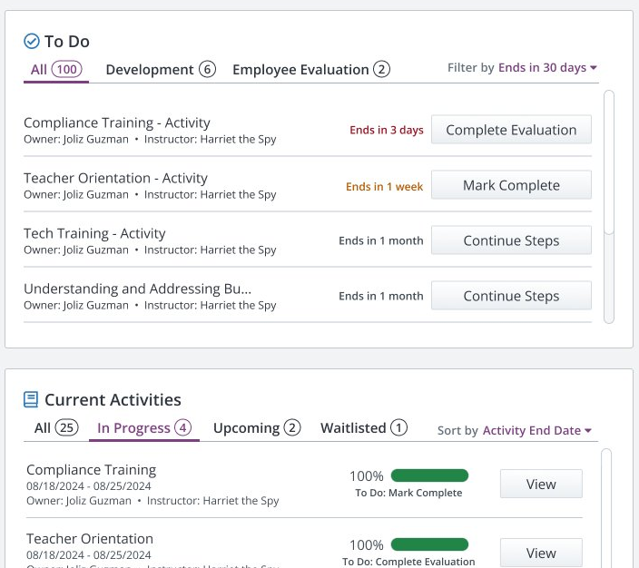
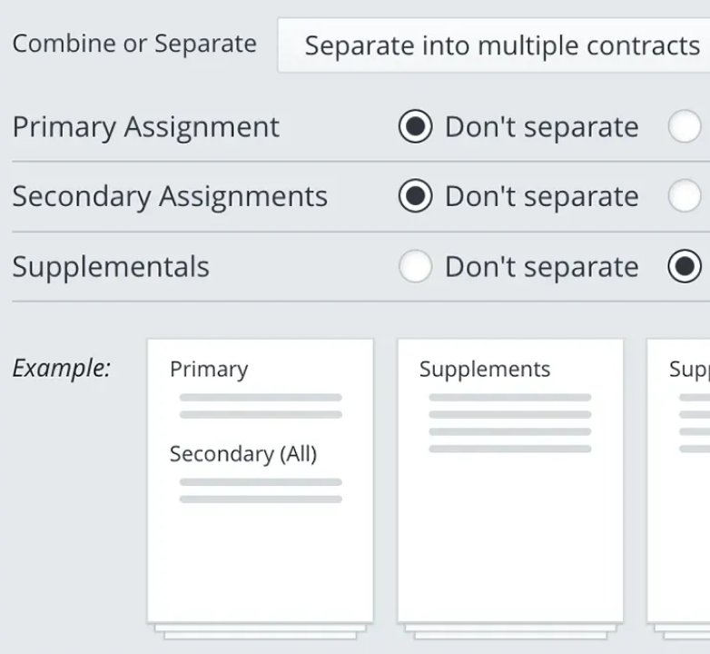
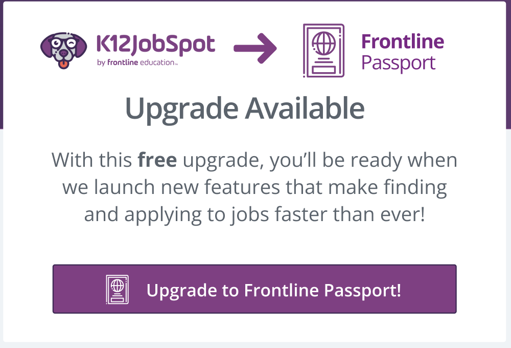

Work

Removing the friction that cost teachers their raises.
MethodsResearch synthesis · IA audit · Wireframes · Concept validation

Increasing confidence during the highest-volume week in K–12 hiring.
MethodsContract analysis · Prototyping · Usability testing

Making a mandatory account change feel like an upgrade.
MethodsUsability testing · UX writing · CS research
AI in Practice
Writing
About
I'm a product designer, tech tinkerer, and spinner based in Miami, FL. Most of my career has been in B2B enterprise SaaS — regulated, legacy-bound, high-stakes products where the constraints are the interesting part.
My mark is a drop spindle — the tool I use to spin raw fiber into yarn. Spinning taught me that constraints are design material: you can't argue with what the fiber wants to do, you can only work with it. Enterprise design is the same. You don't choose the data model, the release train, or the people who have to use it. You decide what they add up to.